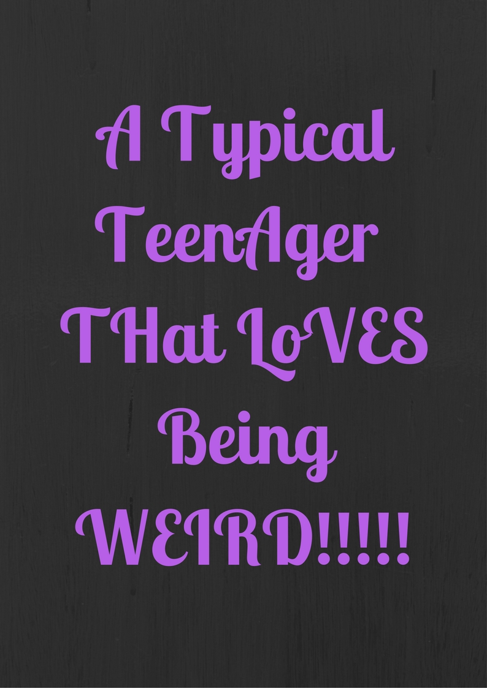
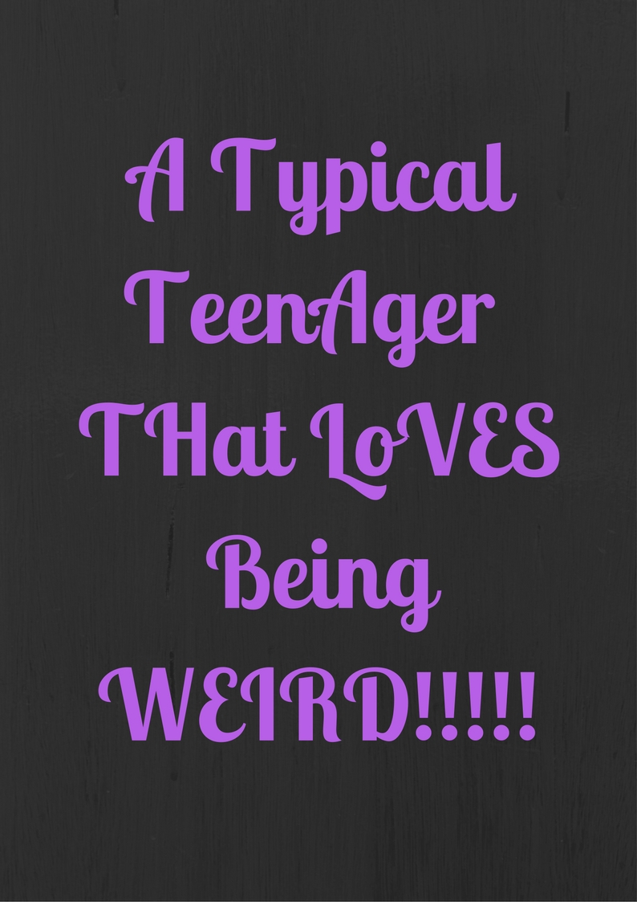
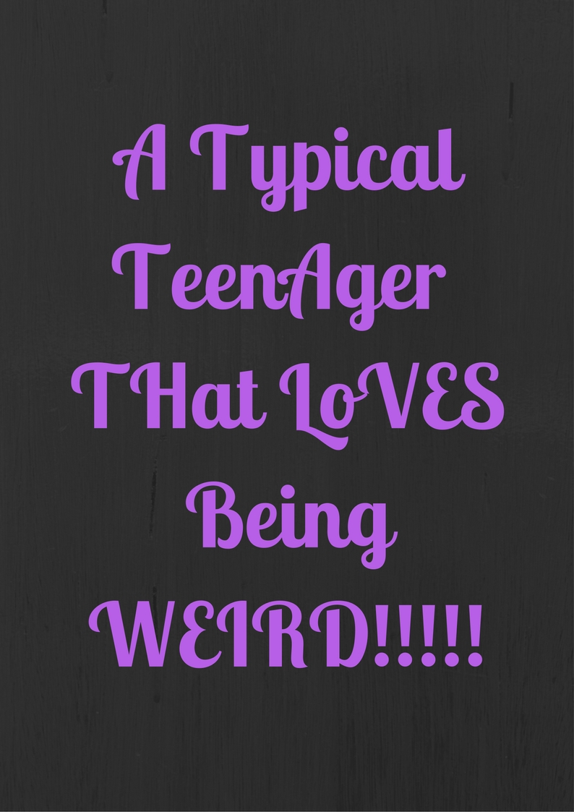
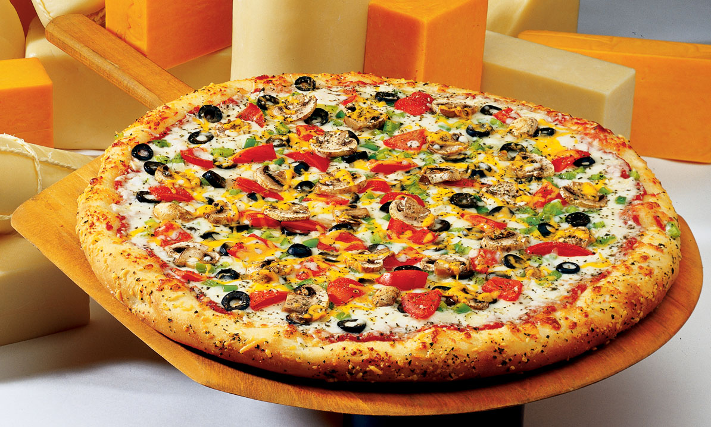
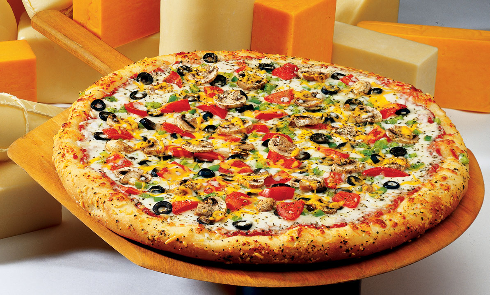

My actual name is Afrah Aleef Noor. My first name could mean a leaf but it also is the
first letter of the arabic alphabet. Now, let us get to know my last name.
My last name is Noor. Noor means light.
So, I like to think my name means First Light.
A leaf. Yes, I love this joke
 
